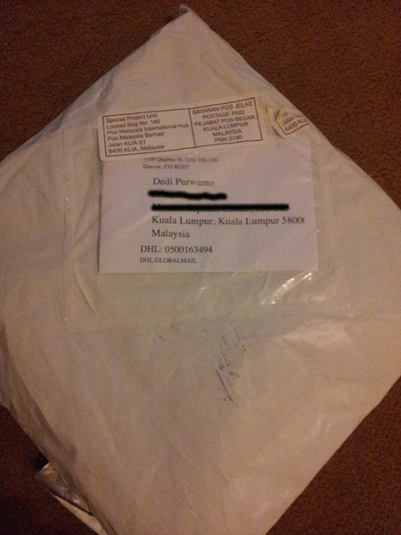
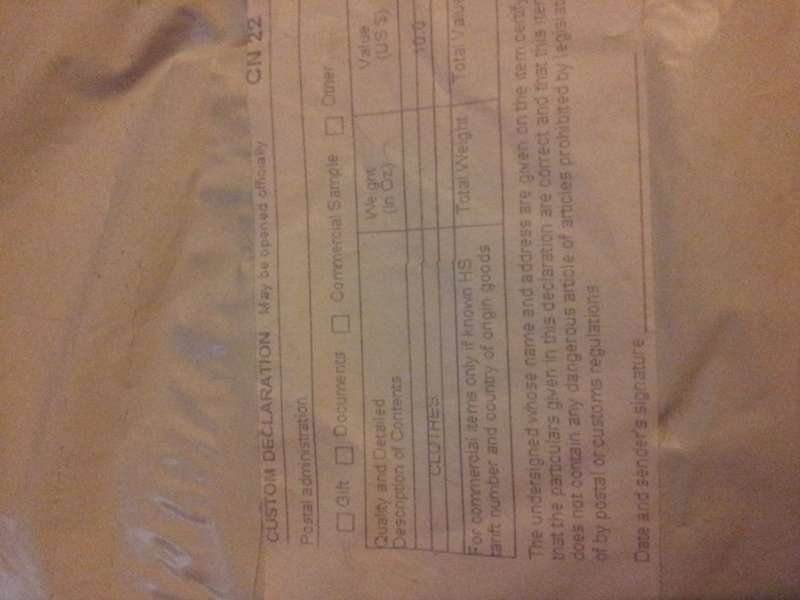
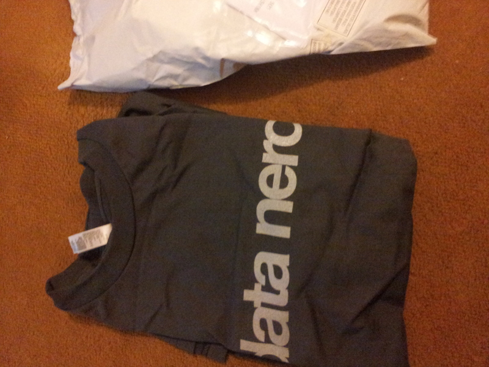
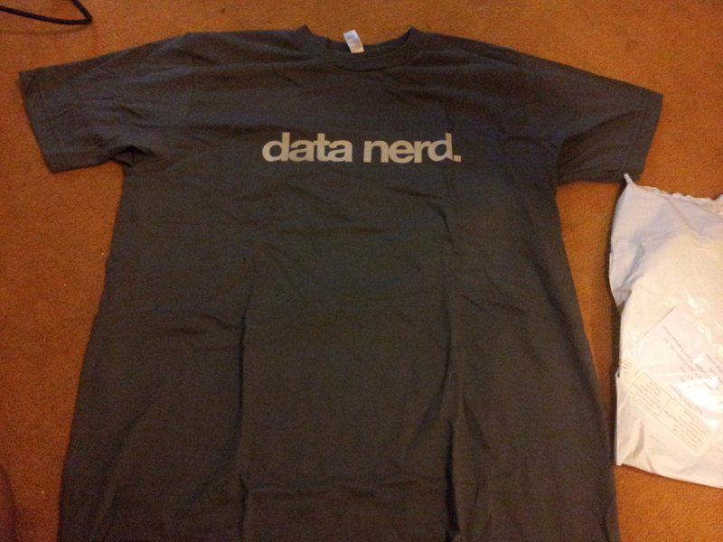
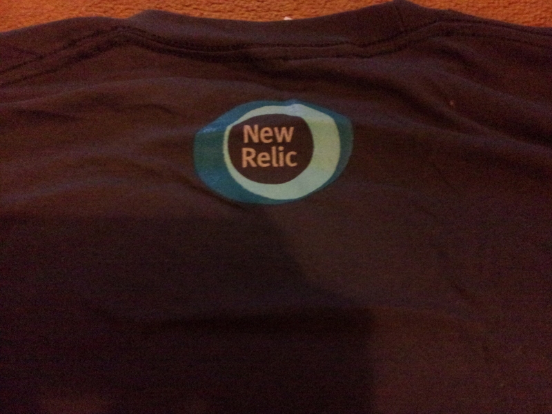

4 Minggu yang lalu New Relic ada promosi bagi setiap user baru yang ngedeploy, bakal dapet t-shirt "Data Nerd" gratis, syaratnya, harus register via Geekli.st. Karna saya udah punya account New Relic sebelum ini, jadi harus register account terpisah buat ngedapetin t-shirt nya, maruk yah :p. Anyway t-shirtnya udah datang:
    